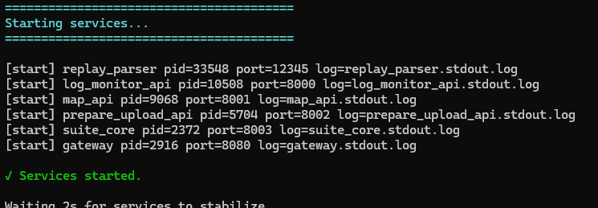
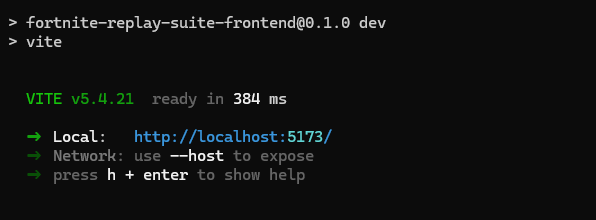
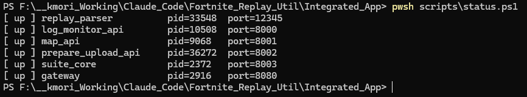
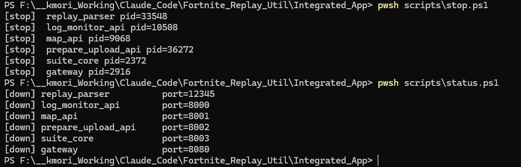

Gateway (8080) / Replay Parser (12345) / Log Monitor (8000) / Map (8001) / Prepare Upload (8002) / Suite Core (8003) の 合計 6 プロセス。フロントエンド（Vite dev :5173）は開発時のみ別途起動します。
1manage.ps1 で一括管理（推奨）
manage.ps1 は「起動 → 状態確認 → Smoke テスト」を 1 コマンドで行う統合スクリプトです。日常の起動・停止はこちらを使ってください。
1.1 起動（バックエンドのみ）
pwsh scripts\manage.ps16 サービスを起動 → 8 秒待機（サービス安定化）→ status 確認 → smoke.py 実行を自動で行います。全サービスが OK になったら準備完了です。
1.2 起動 + Vite 開発サーバーも同時に起動
pwsh scripts\manage.ps1 -Dev-Dev を付けると、バックエンド起動後に Windows Terminal の新しいタブで Vite 開発サーバーが自動起動します（Windows Terminal が必要）。
1.3 停止
pwsh scripts\manage.ps1 -Stop全サービスと、起動中の Vite 開発サーバーを停止します。
-Service gateway のように指定すると、そのサービスのみを対象にします（例: pwsh scripts\manage.ps1 -Stop -Service log_monitor_api）。
2個別スクリプトでの起動
manage.ps1 の内部で使われている個別スクリプトを直接叩くこともできます。
pwsh scripts\start.ps1出力に 6 サービス分の起動行（PID 付き）が並べば成功です。各サービスは Start-Process -WindowStyle Hidden で背景起動されるため、ターミナル画面には残りません。

3疎通確認
起動直後に Smoke テストで全サービスが応答するかを確認します。
python scripts\smoke.py全 6 行が OK、終了コード 0 なら成功です。失敗した行があれば、対応する logs/<service>.err.log を確認してください。
python scripts\smoke.py --direct は Gateway を経由せず、各サービスが自身のポートに bind できているかを直接確認します。Gateway 経由（既定）と比較して切り分けができます。
4フロント開発サーバー
UI を触る場合は Vite の開発サーバーを起動します。manage.ps1 -Dev を使うと自動起動できますが、手動でも起動できます。
cd frontend
npm run dev起動後、Local: http://localhost:5173 が表示されたらブラウザで開きます。HMR（ホットリロード）が効くため、ソース変更が即時反映されます。

Vite dev は /api/* を Gateway (http://localhost:8080) にプロキシする設定です。フロントだけ起動しても、バックエンド側が落ちていると画面はエラーで埋まります。先に start.ps1 を済ませてください。
5稼働状態の確認
6 サービスがいま running かどうかは status.ps1 で一覧できます。
pwsh scripts\status.ps1各サービスについて running / not running と PID が出力されます。判定は .run/<service>.pid を読み、その PID が実在するかで行われます。

6全サービス停止
停止も 1 コマンドで行います。
pwsh scripts\stop.ps16 サービス分の停止行が出力され、.run/*.pid ファイルが削除されます。直後に status.ps1 や smoke.py を再実行すると、すべてが not running / Connection refused になっていることを確認できます。

7ログとプロセス管理
各サービスの動作ログ・標準出力・PID は次の場所に保存されます。何か挙動がおかしいときの一次調査ポイントです。
| パス | 内容 |
|---|---|
logs/<service>.stdout.log |
サービスの標準出力（uvicorn の起動ログ等） |
logs/<service>.err.log |
標準エラー（例外・スタックトレース） |
logs/<service>.log |
アプリケーションロガーの構造化ログ |
.run/<service>.pid |
start.ps1 が記録した PID。status.ps1 / stop.ps1 はここを参照 |
stop.ps1 + start.ps1 で全停止 → 全起動が一番確実です。特定サービスだけ再起動したい場合は、対応する .run/<service>.pid の PID を Stop-Process で終了させた上で、uvicorn コマンドを直接叩きます（コマンドは 01 章 参照）。